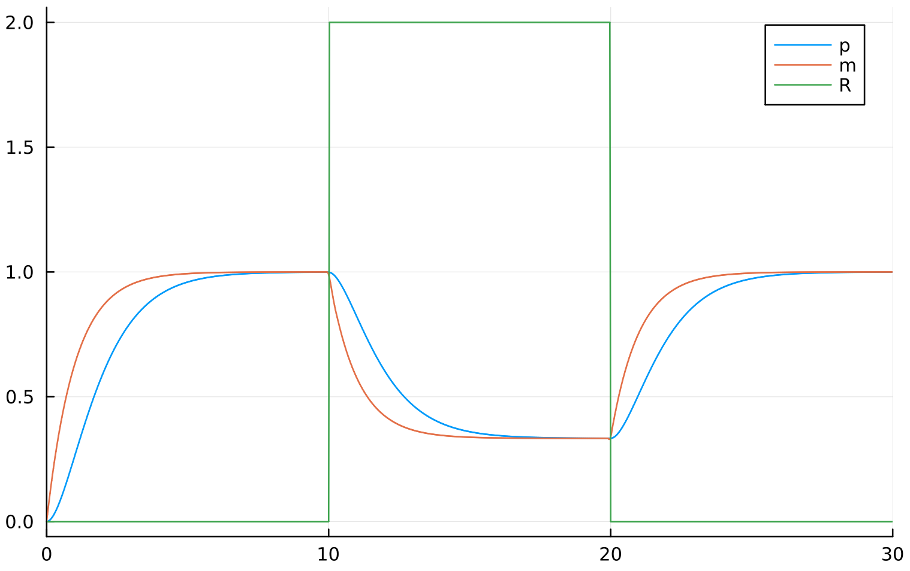

Posts tagged "programming":
Biological Systems Modelling with Julia #1 - ODEs
Overview
Mathematical models are used to create designs for systems in silico. The model can be used to test and optimise the design before implementing it in vivo or in vitro.
Over the course of this article I'll be using the simple example of gene transcription regulation by repressors to demonstrate the process of modelling with ordinary differential equations in Julia. We will then use the model to compose a more complex model of a toggle switch.
Rationale - Why Julia?
In other words, "why not Python/MATLAB/R?"
- Julia is an infix Lisp:
- Macros allow for beautifully elegant and flexible code
- Encouragement of the functional paradigm, making code easier to reason about
- Higher order functions such as map and reduce
- High performance, approaching that of statically typed languages:
- High efficiency => Less energy usage
- Tasks complete faster
- Easy to implement parallel and distributed algorithms
- Built-in package manager with a delightful smorgasbord of libraries
ModelingToolkit.jl- Systems Modelling
DifferentialEquations.jl- Differential Equations
DiffEqBiological.jl- Useful for modelling chemical reaction networks
- Open source (unlike MATLAB)
- No licensing issues
- Not for-profit
- More rapid development and bug fixes
Modelling Gene Transcription By Repressors
Import libraries used for modelling — Plots is used to display the
graph of the simulated model, and DifferentialEquations:solve is
used to solve the differential equations. ModelingToolkit composes a
number of useful tools for modelling, such as the @mtkmodel macro.
using ModelingToolkit, Plots using DifferentialEquations:solve
First we declare our independent variable for time, t. Then we declare
D as a differential equation with respect to t:
# Gene transcription regulation by repressors # equations derived from 'Synthetic Biology - A Primer' @variables t # time D = Differential(t) # D is a derivative with respect to t
Declare the forcing function f_fun representing the concentration of
transcriptional repressor, R, over time. Register the function to
prevent symbolic transformations.
ModelingToolkit also supports discrete events, to avoid having to
use a function to model the changes, but for simplicity's sake we will
consider that later.
f_fun(t) = t > 5 ? 2. : 0. # after t = 5 add repressor @register_symbolic f_fun(t) # register as forcing function for GTR
Define the model variables, parameters, and functions. @mtkmodel is
a relatively recent addition to ModelingToolkit.jl at the time of
writing, so may not be available in older versions of Julia. An
equivalent, if more verbose solution can be obtained using ODESystem
instead. In this example we will be using @mtkmodel.
@mtkmodel GTR begin
@variables begin
m(t) # [mRNA] obtained from transcription, at time t
p(t) # [protein] from translation, at time t
R(t) # function to describe level of repressor
end
@parameters begin
k1 # maximal transcription rate
k2 # protein translation rate
K # repression coefficient
n # Hill coefficient
d1 # mRNA degradation rate
d2 # protein degradation rate
end
@equations begin
R ~ f_fun(t)
D(m) ~ k1 * K^n / (K^n + R^n) - d1 * m
D(p) ~ k2 * m - d2 * p
end
end
Solve the model for some given values, then plot as a graph:
@mtkbuild gtr = GTR()
println("ODE...")
prob = ODEProblem(gtr,
[gtr.m => 0, gtr.p => 0], # initial conditions
(0.0, 30.0), # range of t
[gtr.k1 => 1, # parameter values
gtr.k2 => 1,
gtr.K => 1,
gtr.n => 1,
gtr.d1 => 1,
gtr.d2 => 1,])
println("Solve...")
sol = solve(prob)
println("Plot...")
plot(sol, idxs = [gtr.p, gtr.m, gtr.R])
Output
Behold a graph:
